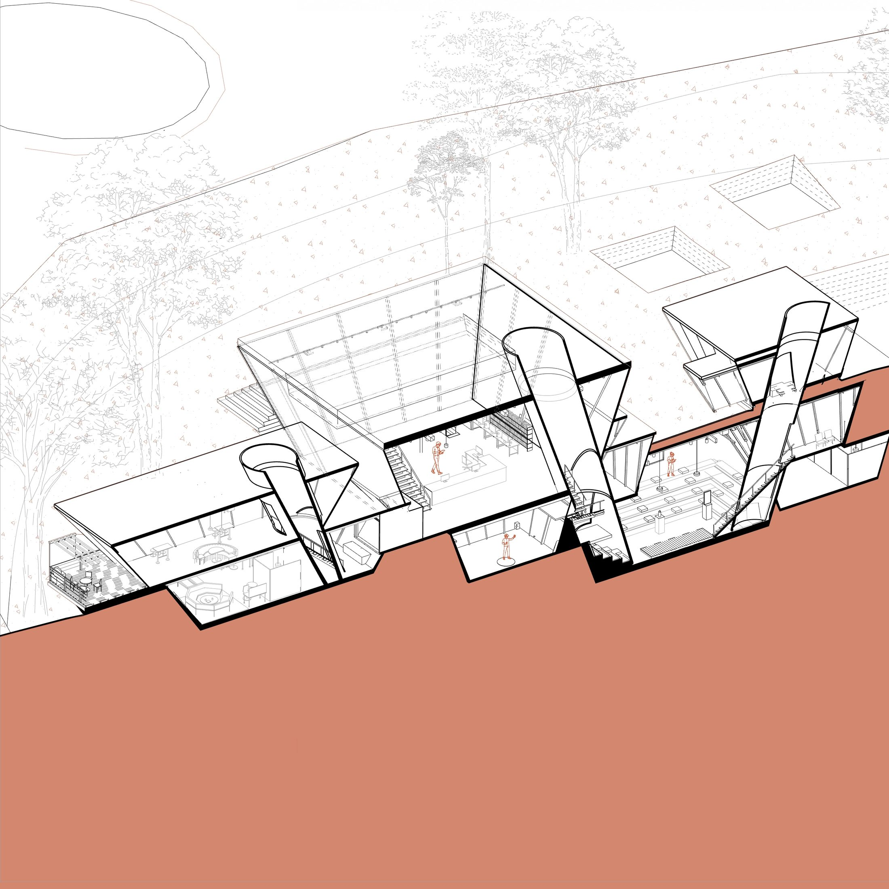
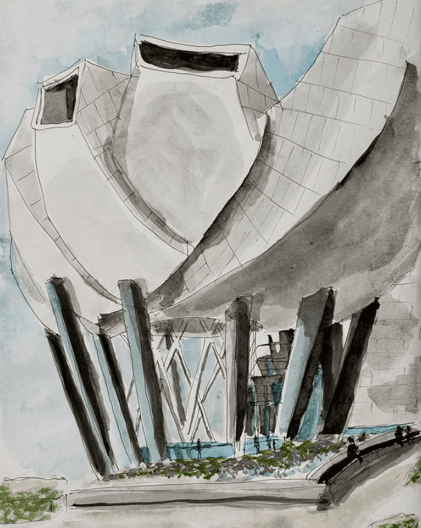
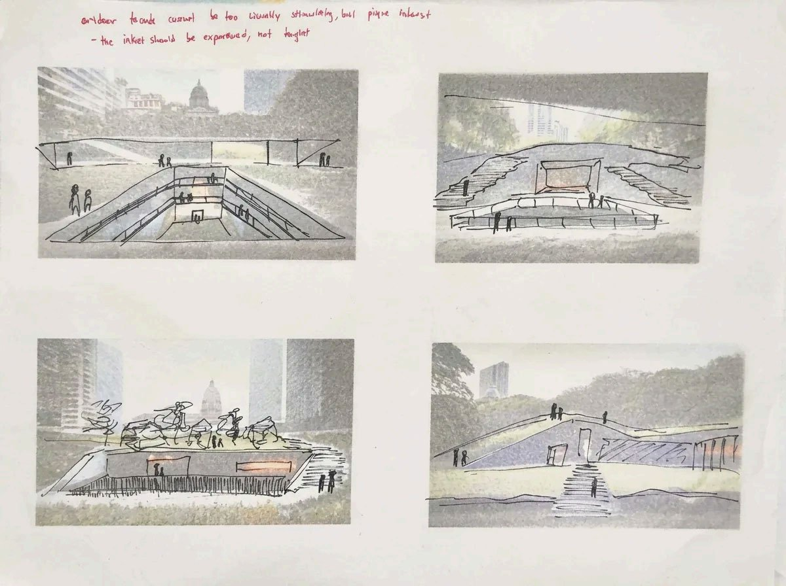
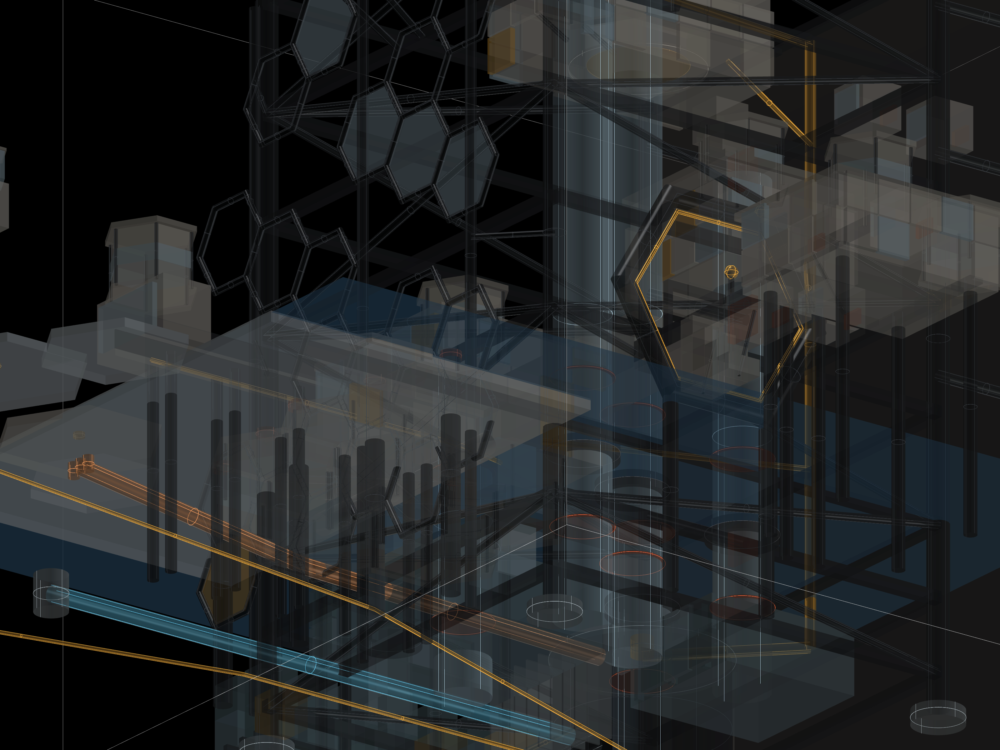

01 INDEX
three rooms · 2025 — 2026

R.01 · MAIN ATTRACTION
THE NUTS — TOOLS
wasp-mcp · almond · chestnut · ginkgo · betelnut

R.02
CORE STUDIO 01
four exercises · moma singapore · the inverted pyramid

R.03
ART & FIELD NOTES
@ljungart · studies · sketches · process film

R.04 · WRITING
THE DREAM ENGINE
essay · on AI, taste, and why creation requires risk

R.05
MUSEUM OF MEMORIES
core studio 02 · bering strait · splats → rooms